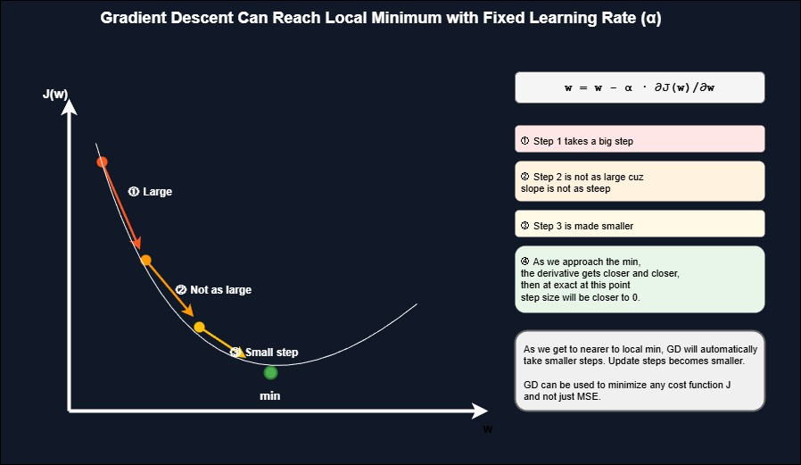
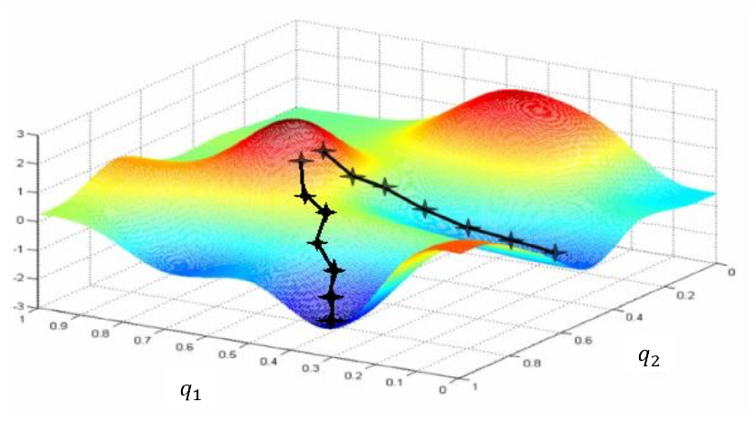

Gradient descent is the optimization algorithm that finds the best parameters for linear regression. It minimizes the cost function by iteratively adjusting weights and bias to find the line that best fits the data.
Linear Regression Model and Cost Function
The linear regression model predicts output based on input features:
Where w is the weight (slope) and b is the bias (intercept). The cost function measures how well the model fits the data:
Where m is the number of training examples, x(i) is the i-th input, and y(i) is the i-th actual output.
Gradient Descent Update Rules
Gradient descent updates parameters by moving in the direction that decreases the cost. Repeat until convergence:
b = b - α · ∂J(w,b)/∂b
The partial derivatives (gradients) for linear regression are:
∂J(w,b)/∂b = (1/m) Σ (fw,b(x(i)) - y(i))
Adaptive Step Size Behavior
Gradient descent automatically adjusts step sizes as it approaches the minimum. This happens because the derivative gets smaller near the minimum:
How Steps Change:
- Step 1: Takes a big step (derivative is large, slope is steep)
- Step 2: Not as large because slope is not as steep
- Step 3: Made smaller as derivative decreases
- At minimum: Derivative gets closer and closer to zero, step size approaches zero
As gradient descent gets nearer to the local minimum, it automatically takes smaller steps. Update steps become smaller without changing the learning rate α.
Visualization

Step sizes automatically decrease as gradient descent approaches the minimum
General Purpose Algorithm
Gradient descent is not limited to mean squared error. It can minimize any differentiable cost function J, making it applicable to many machine learning algorithms beyond linear regression.
Local vs Global Minimum
Potential Issue: Gradient descent can lead to a local minimum instead of the global minimum.
A global minimum is the point with the lowest possible value for the cost function J out of all possible points. Depending on where you initialize parameters w and b, gradient descent might converge to different local minima.

Multiple local minima: initialization determines which minimum is reached
Why Linear Regression Always Works
The squared error cost function with linear regression has a special property: it is a convex function.
Convex Function Properties:
- Has a bow shape (parabolic)
- Contains a single local minimum which is also the global minimum
- Gradient descent will always converge to the global minimum
- No matter where you initialize w and b, you reach the same optimal solution
This is why linear regression with squared error is reliable: the cost function's convex nature guarantees convergence to the best possible parameters.
Implementation Example
import numpy as np
# Training data
X = np.array([1, 2, 3, 4, 5])
y = np.array([2, 4, 5, 4, 5])
# Initialize parameters
w = 0.0
b = 0.0
learning_rate = 0.01
iterations = 1000
m = len(X)
# Gradient descent
for i in range(iterations):
# Compute predictions
f_wb = w * X + b
# Compute gradients
dj_dw = (1/m) * np.sum((f_wb - y) * X)
dj_db = (1/m) * np.sum(f_wb - y)
# Update parameters
w = w - learning_rate * dj_dw
b = b - learning_rate * dj_db
# Print progress
if i % 100 == 0:
cost = (1/(2*m)) * np.sum((f_wb - y)**2)
print(f"Iteration {i}: w={w:.4f}, b={b:.4f}, cost={cost:.4f}")
print(f"\nFinal parameters: w={w:.4f}, b={b:.4f}")Key Takeaways
- Gradient descent minimizes the cost function by computing partial derivatives and updating parameters
- Step sizes automatically adapt as the algorithm approaches the minimum without changing α
- Linear regression's cost function is convex guaranteeing convergence to the global minimum
- The algorithm is general purpose and works for any differentiable cost function
- Initialization matters for non-convex problems but not for linear regression